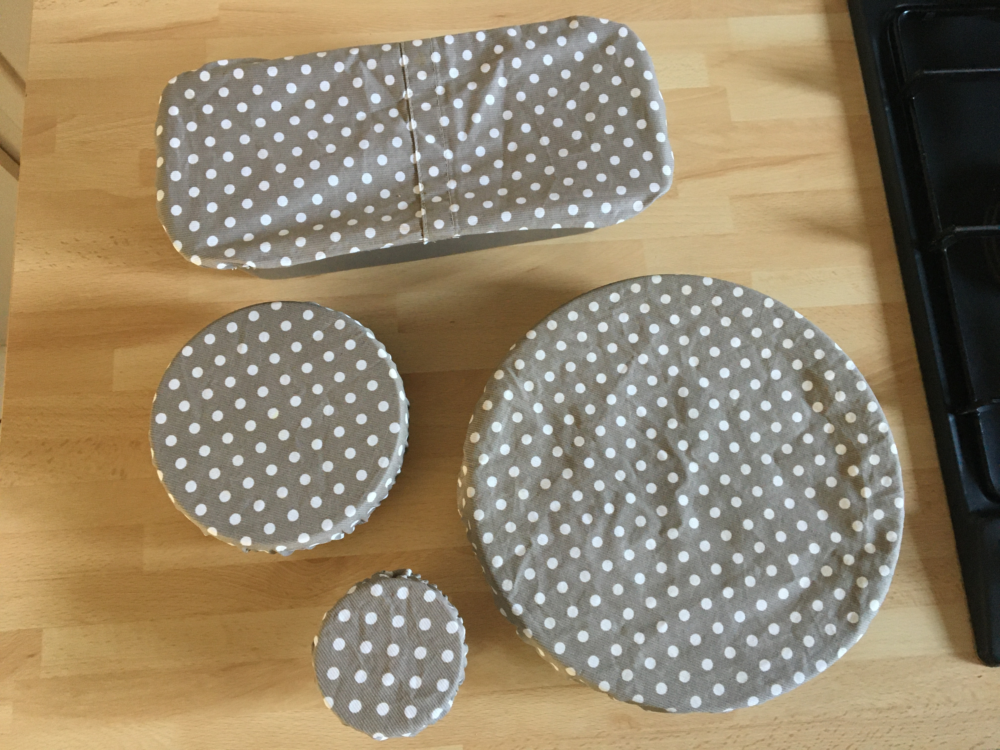

Trousses - Pochettes - Sacs
A emmener partout au travail, en vacances ... , trousses et pochettes de tailles et formes différentes sont pratiques, idéales pour ranger le maquillage, les papiers, le bazar du quotidien …
Photos Vente de Noël
Lingettes démaquillantes
Les lingettes démaquillantes lavables sont réutilisables. Elles remplacent le coton démaquillant jetable. Entrez dans une démarque écologique de zéro déchet en cousant vos propres carrés de lingettes lavables, simple à réaliser. Le coton est idéal pour les doubler avec un tissu éponge ou un tissu velours. Doux et absorbant, l’éponge nettoie le visage en profondeur. (image recto/verso)
Couvre-bols
En tissu enduit réutilisable et éco-responsable, le couvre-bol vous aidera à remplacer votre papier aluminium ou film étirable… Il s’utilise au quotidien et s’adapte à tous vos contenants de taille moyenne. Ce couvre bol permet de conserver vos aliments au réfrigérateur et de les protéger de la poussière et des insectes. Changez vos habitudes facilement pour une démarche zéro déchet et durable! Se lave en machine à 30°C ou se rince à l’eau tiède et savonneuse avec une éponge.
Eponges lavables en tissu
Les éponges sont réalisées avec un côté tissu et un côté éponge/toile de jute, lavables en machine. Les Tawashis est le principe de tisser avec des matériaux de récupération bien plus écolo. On recycle et on réutilise. J'ai réalisé et testé les tawashis, pas trop fan puisqu'ils mettent du temps à sécher contrairement aux éponges qui sont rembourrées de fibres polyester et séchent plus vite.